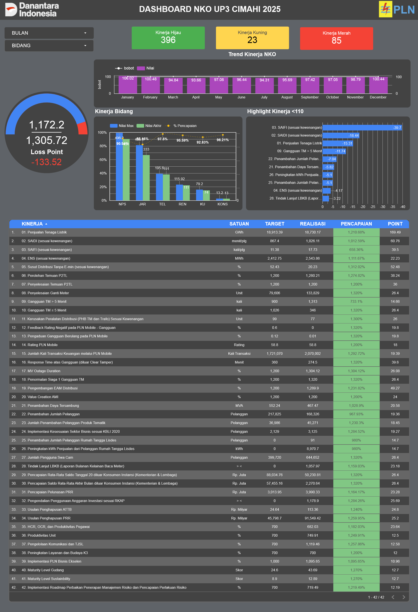

01 / BUSINESS INTELLIGENCEPLN UP3 Cimahi
PLN UP3 Cimahi
NKO Dashboard
Dashboard pemantauan kinerja organisasi dan operasional jaringan. Data dari unit layanan dirapikan dan disajikan untuk membantu melihat capaian KPI, keandalan jaringan, serta area yang perlu perhatian.
Lihat dashboard ↗